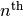

pandas.io.html.read_html¶
- pandas.io.html.read_html(io, match='.+', flavor=None, header=None, index_col=None, skiprows=None, infer_types=True, attrs=None)¶
Read an HTML table into a DataFrame.
Parameters : io : str or file-like
A string or file like object that can be either a url, a file-like object, or a raw string containing HTML. Note that lxml only accepts the http, ftp and file url protocols. If you have a URI that starts with 'https' you might removing the 's'.
match : str or regex, optional, default ‘.+’
The set of tables containing text matching this regex or string will be returned. Unless the HTML is extremely simple you will probably need to pass a non-empty string here. Defaults to ‘.+’ (match any non-empty string). The default value will return all tables contained on a page. This value is converted to a regular expression so that there is consistent behavior between Beautiful Soup and lxml.
flavor : str, container of strings, default None
The parsing engine to use under the hood. ‘bs4’ and ‘html5lib’ are synonymous with each other, they are both there for backwards compatibility. The default of None tries to use lxml to parse and if that fails it falls back on bs4 + html5lib.
header : int or array-like or None, optional, default None
The row (or rows for a MultiIndex) to use to make the columns headers. Note that this row will be removed from the data.
index_col : int or array-like or None, optional, default None
The column to use to make the index. Note that this column will be removed from the data.
skiprows : int or collections.Container or slice or None, optional, default None
If an integer is given then skip this many rows after parsing the column header. If a sequence of integers is given skip those specific rows (0-based). Note that
skiprows == 0
yields the same result as
skiprows is None
If skiprows is a positive integer, say , then it is treated as “skip rows”, not as “skip the  row”.
infer_types : bool, optional, default True
Whether to convert numeric types and date-appearing strings to numbers and dates, respectively.
attrs : dict or None, optional, default None
This is a dictionary of attributes that you can pass to use to identify the table in the HTML. These are not checked for validity before being passed to lxml or Beautiful Soup. However, these attributes must be valid HTML table attributes to work correctly. For example,
attrs = {'id': 'table'}
is a valid attribute dictionary because the ‘id’ HTML tag attribute is a valid HTML attribute for any HTML tag as per this document.
attrs = {'asdf': 'table'}
is not a valid attribute dictionary because ‘asdf’ is not a valid HTML attribute even if it is a valid XML attribute. Valid HTML 4.01 table attributes can be found here. A working draft of the HTML 5 spec can be found here. It contains the latest information on table attributes for the modern web.
Returns : dfs : list of DataFrames
A list of DataFrames, each of which is the parsed data from each of the tables on the page.
Notes
Before using this function you should probably read the gotchas about the parser libraries that this function uses.
There’s as little cleaning of the data as possible due to the heterogeneity and general disorder of HTML on the web.
Expect some cleanup after you call this function. For example, you might need to pass infer_types=False and perform manual conversion if the column names are converted to NaN when you pass the header=0 argument. We try to assume as little as possible about the structure of the table and push the idiosyncrasies of the HTML contained in the table to you, the user.
This function only searches for <table> elements and only for <tr> and <th> rows and <td> elements within those rows. This could be extended by subclassing one of the parser classes contained in pandas.io.html.
Similar to read_csv() the header argument is applied after skiprows is applied.
This function will always return a list of DataFrame or it will fail, e.g., it will not return an empty list.
Examples
See the read_html documentation in the IO section of the docs for many examples of reading HTML.